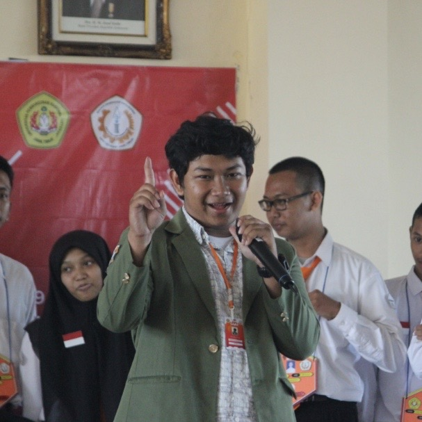

Handie
Pramana
Putra
Profil
 |
Surabaya, 12 September 2000 |
 |
Jl. Simorejo 102-A, Suko Manunggal, Surabaya. 60181 |
 |
081332049634 |
 |
saya_handie |
Critical Skills
| Foto 1 |
Riwayat Pendidikan
| 2018 - Sekarang |
| UPN "Veteran" Jawa Timur |
| 2015 - 2018 |
| SMA Muhammadiyah 10 Surabaya |
| 2012 - 2015 |
| SMP Muhammadiyah 2 Surabaya |
| 2007 - 2012 |
| SD Negeri Asemrowo 1 Surabaya |
Riwayat Organisasi
2019 - 2021 |
|
Pimpinan Daerah |
2018 - 2019 |
|
Ketua Divisi Mobile UKM E-Sport |
2017 - 2019 |
|
Ketua Bidang Perkaderan Pimpinan Cabang |
2016 - 2018 |
|
Forum Anak Kota Surabaya |
2016 - 2017 |
|
Sekertaris Umum Pimpinan Ranting |
2015 - 2016 |
|
Anggota ASBO Pimpinan Ranting |
Prestasi
2017 |
First Place Zetizen School Campaign |
2017 |
Best Practice Agenda Aksi Jihad Literasi |
2017 |
First Place Zetizen School |